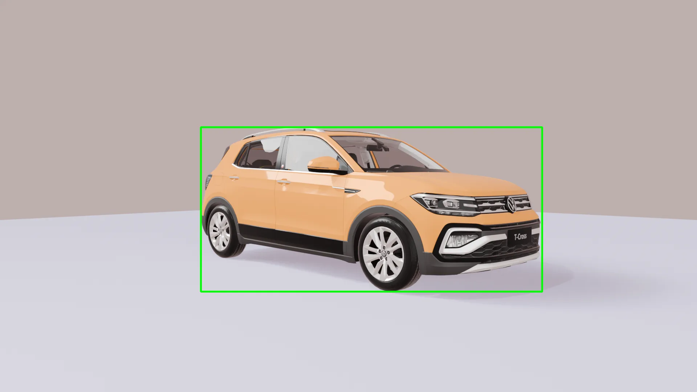
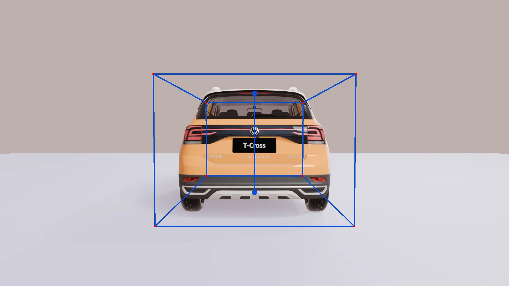
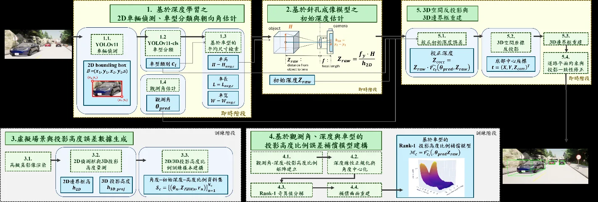
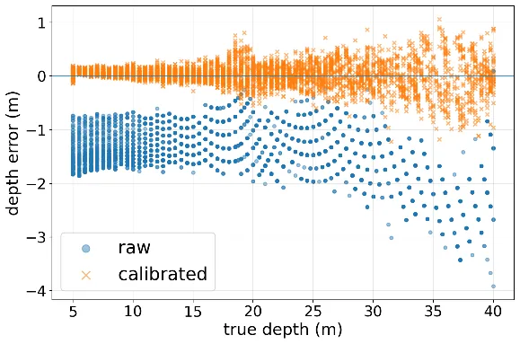
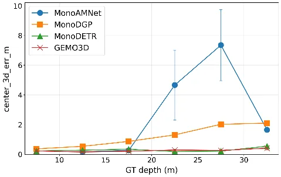
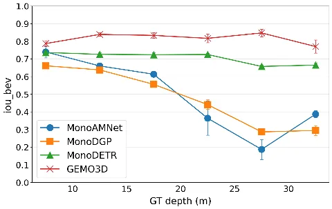

Perception & priors
YOLO locates the 2D vehicle. A classifier selects a size prior, while Ego-Net estimates its viewing orientation.
Geometry-Enhanced Monocular Object Detection in 3D
From one RGB image to a vehicle's position, orientation and 3D bounding box through interpretable geometry.
1 National Changhua University of Education 2 Rochester Institute of Technology

3D geometry2D detection
Research illustrations from the authors' manuscript and slides. Blue shows a 3D box; green shows a YOLO 2D box. These illustrate geometry, not measured detection outputs.
Results reported in the supplied CVGIP 2026 manuscript: localization on objects matched by all four methods in a CARLA two-vehicle scene; speed on 100 images with RTX 3060 12 GB.
Monocular 3D vehicle detection must infer distance from a single image. GEMO3D combines learned 2D detection and orientation with camera projection, vehicle-size priors and a compact depth correction model.
The key correction addresses a specific mismatch: a detector's 2D box height can differ from the ideal projected height of the vehicle's 3D centerline. That difference changes with viewing angle, distance and vehicle shape.
Seven interpretable modules connect image evidence to a KITTI-format 3D prediction.
YOLO locates the 2D vehicle. A classifier selects a size prior, while Ego-Net estimates its viewing orientation.
Pinhole geometry gives initial depth. A vehicle-conditioned Rank-1 SVD model corrects the height bias using angle and initial depth.
Back-projection locates the box, a road-plane constraint fixes its bottom center, and reprojection aligns it with the 2D detection.

A 2D box follows visible silhouette points, which need not have the ideal height of a 3D centerline.
Physical height H, focal length fy and the detected 2D height give an initial depth.
The ratio depends on vehicle class c, angle θ and initial depth. Ground-truth depth is not needed at inference.

Compared with MonoAMNet, MonoDGP and MonoDETR on 165 vehicle instances detected by all four methods.


| Method | Depth RMSE ↓ | Yaw error ↓ | 3D center error ↓ | BEV IoU ↑ | FPS ↑ |
|---|---|---|---|---|---|
| MonoAMNet | 5.58 m | 18.97° | 2.76 m | 0.46 | 40.23 |
| MonoDGP | 1.40 m | 1.23° | 1.25 m | 0.46 | 24.71 |
| MonoDETR | 0.33 m | 1.73° | 0.28 m | 0.70 | 21.34 |
| GEMO3D | 0.27 m | 2.12° | 0.25 m | 0.82 | 31.12 |
These comparisons describe localization on objects matched by every method, not end-to-end recall. GEMO3D has the lowest depth RMSE and center error and highest BEV IoU here; MonoDGP has the lowest yaw error, while MonoAMNet is fastest.
The repository outputs KITTI-format labels and optional intermediate geometry values. Each stage can be examined separately, from detector box height to corrected depth and reprojection fit.
Read the inference guide ↗RGB images and matching camera calibration in KITTI-style folders.
YOLO and Ego-Net weights plus a depth-ratio compensation model; vehicle classification is configurable.
Occlusion, truncation, small distant boxes and wrong vehicle classes can affect depth. Broader tests across camera pitch, slopes and vehicle types remain future work.
This page uses the manuscript and presentation supplied by the research team. The paper link points to their shared PDF, which may require Google Drive access.
@misc{chang2026gemo3d,
title={GEMO3D：結合深度學習感知、相機幾何與投影高度比例補償之單目 3D 車輛偵測方法},
author={Chang, Yu-Chiao and Kuo, Chunghui and Yang, Chieh-Lun and Chang, Ing-Chau},
year={2026},
note={CVGIP 2026, SS09-08}
}